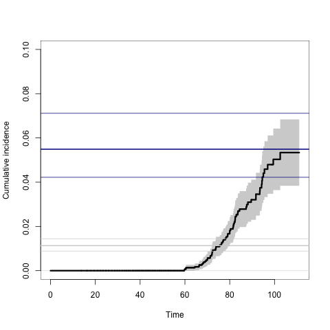
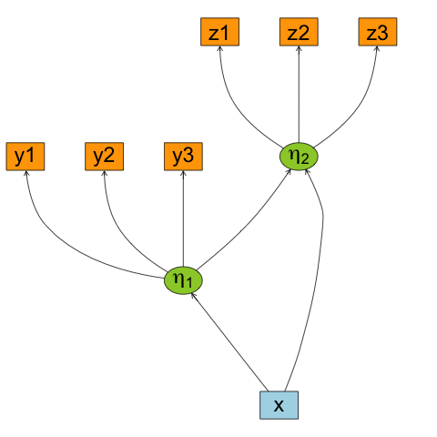
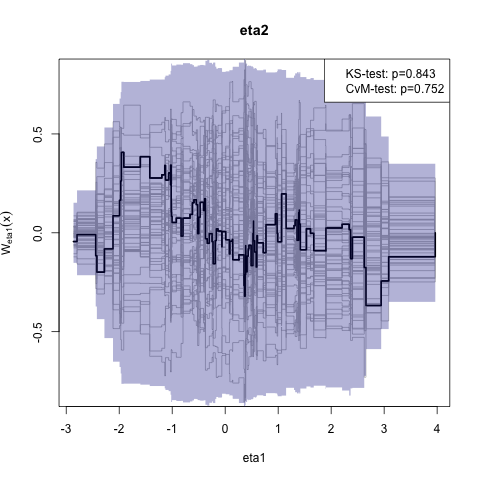

The lava and mets packages
Table of Contents
Multivariate Event Times (mets)
Implementation of various statistical models for multivariate event history data. Including multivariate cumulative incidence models, and bivariate random effects probit models (Liability models)
Installation
install.packages("mets",dependencies=TRUE)
The development version may be installed directly from R-forge (requires Rtools on windows and development tools (+Xcode) for Mac OS X):
install.packages("mets", repos="http://R-Forge.R-project.org")
Citation
To cite that mets package please use the following reference
Thomas H. Scheike and Klaus K. Holst and Jacob B. Hjelmborg (2013).
Estimating heritability for cause specific mortality based on twin studies.
Lifetime Data Analysis. http://dx.doi.org/10.1007/s10985-013-9244-x
BibTeX
@Article{
title={Estimating heritability for cause specific mortality based on twin studies},
author={Scheike, Thomas H. and Holst, Klaus K. and Hjelmborg, Jacob B.},
year={2013},
issn={1380-7870},
journal={Lifetime Data Analysis},
doi={10.1007/s10985-013-9244-x},
url={http://dx.doi.org/10.1007/s10985-013-9244-x},
publisher={Springer US},
keywords={Cause specific hazards; Competing risks; Delayed entry;
Left truncation; Heritability; Survival analysis},
pages={1-24},
language={English}
}
Examples
library(mets) data(prt) ## Prostate data example (sim) ## Bivariate competing risk, concordance estimates p33 <- bicomprisk(Hist(time,status)~strata(zyg)+id(id), data=prt,cause=c(2,2),return.data=1,robust=1) p33dz <- p33$model$"DZ"$comp.risk p33mz <- p33$model$"MZ"$comp.risk ## Probability weights based on Aalen's additive model prtw <- ipw(Surv(time,status==0)~country, data=prt, cluster="id",weightname="w") ## Marginal model (wrongly ignoring censorings) bpmz <- biprobit(cancer~1 + cluster(id), data=subset(prt,zyg=="MZ"), eqmarg=TRUE) ## Extended liability model bpmzIPW <- biprobit(cancer~1 + cluster(id), data=subset(prtw,zyg=="MZ"), weight="w") smz <- summary(bpmzIPW) ## Concordance plot(p33mz,ylim=c(0,0.1)) abline(h=smz$prob["Concordance",],lwd=c(2,1,1),col="darkblue") ## Wrong estimates: abline(h=summary(bpmz)$prob["Concordance",],lwd=c(2,1,1),col="lightgray")

Latent Variable Models (lava)
Estimation and simulation of latent variable models
Installation
install.packages("lava",dependencies=TRUE) library("lava") demo("lava")
For graphical capabilities the Rgraphviz package is needed
source("http://bioconductor.org/biocLite.R"); biocLite("BiocUpgrade") ## Upgrade previous bioconductor installation biocLite("Rgraphviz")
or the igraph package
install.packages("igraph",dependencies=TRUE)
The development version may be installed directly from R-forge:
install.packages("lava", repos="http://R-Forge.R-project.org")
Citation
To cite that lava package please use the following reference
Klaus K. Holst and Esben Budtz-Joergensen (2012).
Linear Latent Variable Models: The lava-package.
Computational Statistics. http://dx.doi.org/10.1007/s00180-012-0344-y
BibTeX:
@Article{lava,
title = {Linear Latent Variable Models: The lava-package},
author = {Klaus K. Holst and Esben Budtz-Joergensen},
year = {2012},
journal = {Computational Statistics},
note = {http://dx.doi.org/10.1007/s00180-012-0344-y},
}
Examples
## Specify structurual equation models with two factors m <- lvm() regression(m) <- c(y1,y2,y3) ~ eta1 regression(m) <- c(z1,z2,z3) ~ eta2 latent(m) <- ~eta1+eta2 regression(m) <- eta2~eta1+x regression(m) <- eta1~x labels(m) <- c(eta1=expression(eta[1]),eta2=expression(eta[2])) plot(m)

## Simulation set.seed(1) d <- sim(m,100) ## Estimation e <- estimate(m,d) e
Estimate Std. Error Z-value P-value
Measurements:
y2<-eta1 0.95462 0.08115 11.76402 <1e-12
y3<-eta1 0.98476 0.08956 10.99505 <1e-12
z2<-eta2 0.97038 0.05390 18.00340 <1e-12
z3<-eta2 0.95608 0.05666 16.87367 <1e-12
Regressions:
eta1<-x 1.24587 0.11541 10.79492 <1e-12
eta2<-eta1 0.95607 0.18015 5.30712 1.114e-07
eta2<-x 1.11495 0.25263 4.41333 1.018e-05
Intercepts:
y2 -0.13896 0.12459 -1.11532 0.2647
y3 -0.07661 0.13870 -0.55239 0.5807
eta1 0.15801 0.12780 1.23644 0.2163
z2 -0.00441 0.14858 -0.02969 0.9763
z3 -0.15900 0.15731 -1.01076 0.3121
eta2 -0.14143 0.18380 -0.76948 0.4416
Residual Variances:
y1 0.69684 0.14862 4.68885
y2 0.89804 0.16632 5.39933
y3 1.22456 0.21185 5.78037
eta1 0.93620 0.19636 4.76773
z1 1.41423 0.26262 5.38514
z2 0.87568 0.19466 4.49852
z3 1.18155 0.22643 5.21822
eta2 1.24430 0.29003 4.29032
## Assessing goodness-of-fit (linearity between eta2 and eta1) library(gof) g <- cumres(e,eta2~eta1) plot(g)
